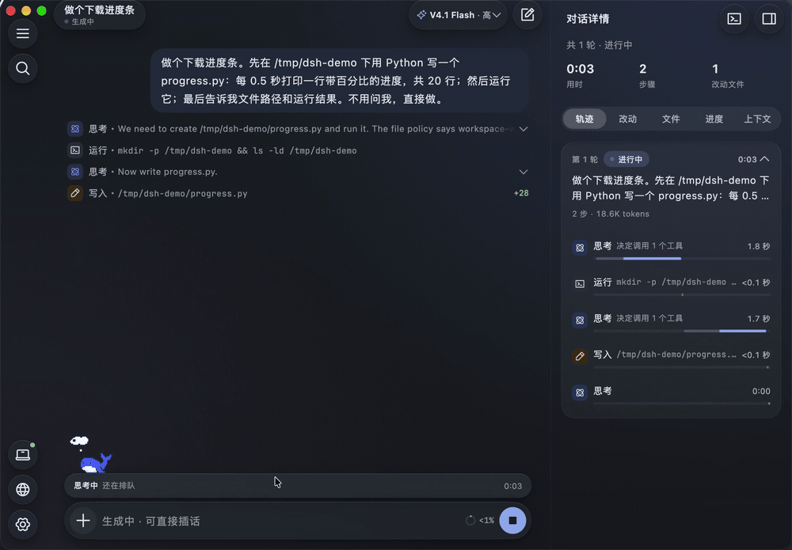
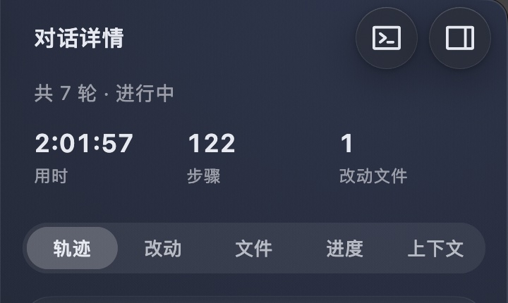
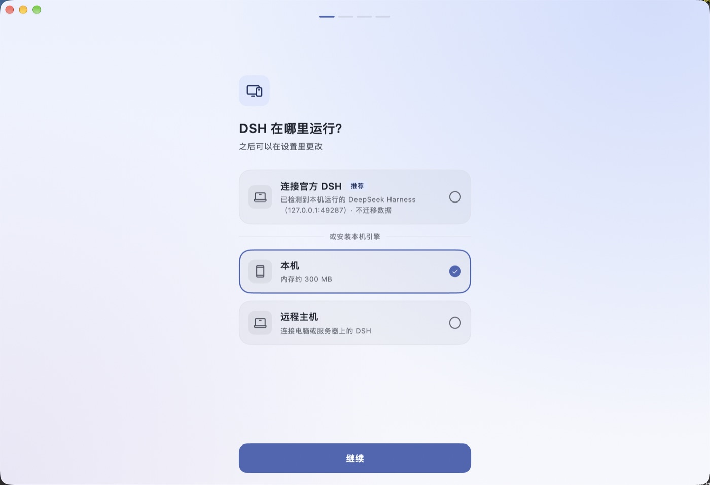

DeepSeek Harness 的第二个 macOS 客户端。同一个引擎，零迁移；过程信息、通知审批和原生动效。

一轮任务结束，三个数先给你：用时、步骤、改动文件。下面五个页签：轨迹、改动、文件、进度、上下文。点「改动」是 diff，点「轨迹」回看每一步。

首次启动检测本机正在运行的 DeepSeek Harness。点「连接官方 DSH」，对话、模型、插件原样都在，读的还是 ~/.dsh。也可以切到内置引擎，或远程 SSH / DSH Remote。

界面是同一套 Flutter，平台层是 Swift。通知、文件、PDF、语音、桌宠、窗口、深链全走 macOS API。
本机引擎是原生 Node 24 + DSH。没有内嵌浏览器，没有额外的运行时壳。
思考胶囊呼吸、工具行滑入、折叠连续展开。长任务里扫一眼就知道状态。
# 下载（Apple Silicon / macOS 12+）
open https://github.com/BillWGong/dsh-go-mac/releases/latest
# 拖进 Applications，首次打开
open "/Applications/DSH Go Mac.app"
# 未签名构建被 Gatekeeper 拦住时
xattr -dr com.apple.quarantine "/Applications/DSH Go Mac.app"首次启动：已在用官方 DSH → 选「连接官方 DSH」；想用内置引擎 → 选「本机」；连远程 → 选「远程主机」。